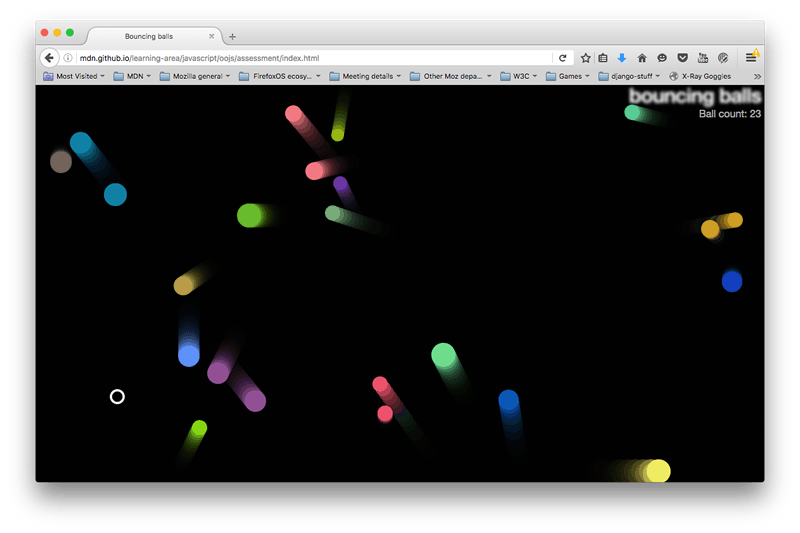

In this assessment, you are expected to use the bouncing balls demo from the previous article as a starting point, and add some new and interesting features to it.
| Prerequisites: | Before attempting this assessment you should have already worked through all the articles in this module. |
|---|---|
| Objective: | To test comprehension of JavaScript objects and object-oriented constructs |
Starting point
To get this assessment started, make a local copy of index-finished.html, style.css, and main-finished.js from our last article in a new directory in your local computer.
Note: Alternatively, you could use a site like JSBin or Thimble to do your assessment. You could paste the HTML, CSS and JavaScript into one of these online editors. If the online editor you are using doesn't have separate JavaScript/CSS panels, feel free to put them inline <script>/<style> elements inside the HTML page.
Project brief
Our bouncy ball demo is fun, but now we want to make it a little bit more interactive by adding a user-controlled evil circle, which will eat the balls if it catches them. We also want to test your object-building skills by creating a generic Shape() object that our balls and evil circle can inherit from. Finally, we want to add a score counter to track the number of balls left to capture.
The following screenshot gives you an idea of what the finished program should look like:

To give you more of an idea, have a look at the finished example (no peeking at the source code!)
Steps to complete
The following sections describe what you need to do.
Creating our new objects
First of all, change your existing Ball() constructor so that it becomes a Shape() constructor and a new Ball() constructor:
- The
Shape()constructor should define thex,y,velX, andvelYproperties in the same way as theBall()constructor did originally. - It should also define a new property called
exists, which is used to track whether the balls exist in the program (have not been eaten by the evil circle). This should be a boolean, with an initial value oftrue. - The
Ball()constructor should inheritx,y,velX,velY, andexistsfrom theShape()constructor. Remember that you'll need to define them as parameters as well as calling them. - It should also define a
colorand asizeproperty, which should both be initialized to the same random values as they were in the originalBall()constructor. - Remember to set the
Ball()constructor'sprototypeandconstructorappropriately.
The ball draw(), update(), and collisionDetect() method definitions should be able to stay exactly the same as they were before.
At this point, try reloading the code — it should work just the same as it did before, with our redesigned objects.
Defining EvilCircle()
Now it's time to meet the bad guy — the EvilCircle()! Our game is only going to involve one evil circle, but we are still going to define it using a constructor that inherits from Shape() to give you some practice. You might want to add another circle to the app later on that can be controlled by another player, or have several computer-controlled evil circles. You're probably not going to take over the world with a single evil circle, but it will do for this assessment.
The EvilCircle() constructor should inherit x, y, and exists from Shape().
It should also define its own properties, as follows:
color—'white'size—10velX—20velY—20
Again, remember to define your inherited properties as parameters in the constructor, and set the prototype and constructor properties correctly.
Defining EvilCircle()'s methods
EvilCircle() should have four methods, as described below.
draw()
This method has the same purpose as Ball()'s draw() method: It draws the object instance on the canvas. It will work in a very similar way, so you can start by copying the Ball.prototype.draw definition. You should then make the following changes:
- We want the evil circle to not be filled in, but rather just have an outer line (stroke). You can achieve this by updating
fillStyleandfill()tostrokeStyleandstroke(). - We also want to make the stroke a bit thicker, so you can see the evil circle a bit more easily. This can be achieved by setting a value for
lineWidthsomewhere after thebeginPath()call (3 will do).
checkBounds()
This method will do the same thing as the first part of Ball()'s update() function — look to see whether the evil circle is going to go off the edge of the screen, and stop it from doing so. Again, you can mostly just copy the Ball.prototype.update definition, but there are a few changes you should make:
- Get rid of the last two lines — we don't want to automatically update the evil circle's position on every frame, because we will be moving it in some other way, as you'll see below.
- Inside the
if()statements, if the tests return true we don't want to updatevelX/velY; we want to instead change the value ofx/yso the evil circle is bounced back onto the screen slightly. Adding or subtracting (as appropriate) the evil circle'ssizeproperty would make sense.
setControls()
This method will add an onkeydown event listener to the window object so that when certain keyboard keys are pressed, we can move the evil circle around. The following code block should be put inside the method definition:
var _this = this;
window.onkeydown = function(e) {
if(e.keyCode === 65) {
_this.x -= _this.velX;
} else if(e.keyCode === 68) {
_this.x += _this.velX;
} else if(e.keyCode === 87) {
_this.y -= _this.velY;
} else if(e.keyCode === 83) {
_this.y += _this.velY;
}
}
So when a key is pressed, the event object's keyCode property is consulted to see which key is pressed. If it is one of the four represented by the specified keycodes, then the evil circle will move left/right/up/down.
- For a bonus point, let us know which keys the specified keycodes map to.
- For another bonus point, can you tell us why we've had to set
var _this = this;in the position it is in? It is something to do with function scope.
collisionDetect()
This method will act in a very similar way to Ball()'s collisionDetect() method, so you can use a copy of that as the basis of this new method. But there are a couple of differences:
- In the outer
ifstatement, you no longer need to check whether the current ball in the iteration is the same as the ball that is doing the checking — because it is not longer a ball, it is the evil circle! Instead, you need to do a test to see if the ball being checked exists (with which property could you do this with?). If it doesn't exist, it has already been eaten by the evil circle, so there is no need to check it again. - In the inner
ifstatement, you no longer want to make the objects change color when a collision is detected — instead, you want to set any balls that collide with the evil circle to not exist any more (again, how do you think you'd do that?).
Bringing the evil circle into the program
Now we've defined the evil circle, we need to actually make it appear in our scene. To do this, you need to make some changes to the loop() function.
- First of all, create a new evil circle object instance, then call its
setControls()method. You only need to do these two things once, not on every iteration of the loop. - At the point where you loop through every ball and call the
draw(),update(), andcollisionDetect()functions for each one, make it so that these functions are only called if the current ball exists. - Call the evil ball instance's
draw(),checkBounds(), andcollisionDetect()methods on every iteration of the loop.
Implementing the score counter
To implement the score counter, follow the following steps:
- In your HTML file, add a
<p>element just below the<h1>element containing the text "Ball count: ". - In your CSS file, add the following rule at the bottom:
p { position: absolute; margin: 0; top: 35px; right: 5px; color: #aaa; } - In your JavaScript, make the following updates:
- Create a variable that stores a reference to the paragraph.
- Keep a count of the number of balls on screen in some way.
- Increment the count and display the updated number of balls each time a ball is added to the scene.
- Decrement the count and display the updated number of balls each time the evil circle eats a ball (causes it not to exist).
Hints and tips
- This assessment is quite challenging. Take each step slowly and carefully.
- It might be an idea to keep a separate copy of the demo after you get each stage working, so you can refer back to it if you find yourself in trouble later on.
Assessment
If you are following this assessment as part of an organized course, you should be able to give your work to your teacher/mentor for marking. If you are self-learning, then you can get the marking guide fairly easily by asking on the dev-mdc mailing list, or in the #mdn IRC channel on Mozilla IRC. Try the exercise first — there is nothing to be gained by cheating!